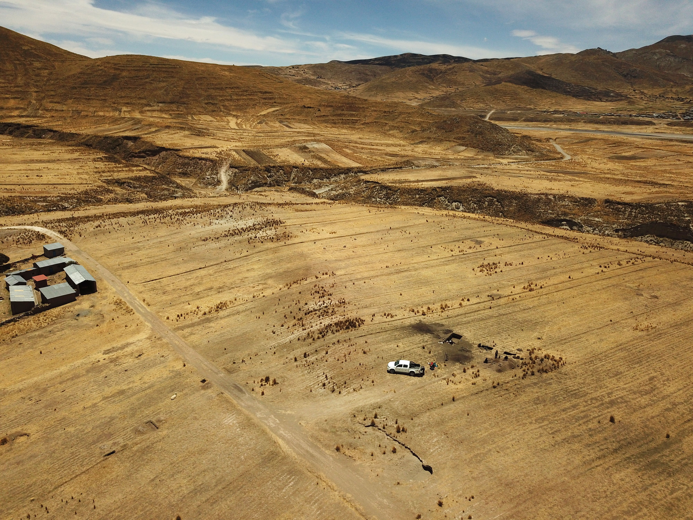
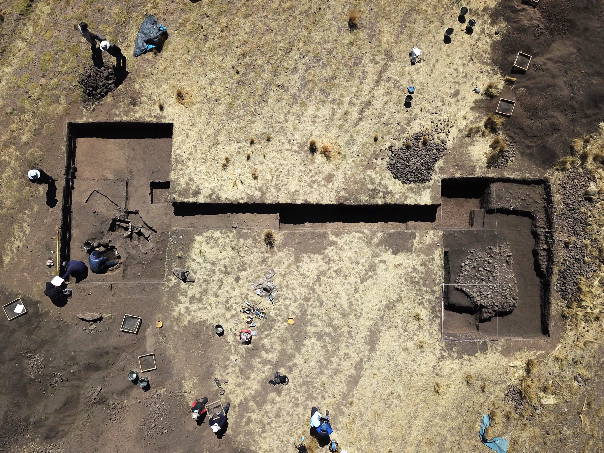

FIELDWORK
From archaeological contexts to research samples
FOODPOWER begins with archaeological evidence. Fieldwork and museum research provide the contexts, materials, and samples needed to investigate changing foodways, diet, inequality, and power in the ancient Andes.

01 · ARCHAEOLOGICAL CONTEXTS
Understanding food within its archaeological context
Archaeological contexts provide the foundation for investigating past foodways. FOODPOWER considers settlements, domestic spaces, burials, activity areas, and other archaeological contexts in which food, animals, plants, vessels, and human remains are preserved.
Understanding where materials were recovered and how they were associated is essential for interpreting the evidence generated through laboratory analysis.

02 · MUSEUM COLLECTIONS
Researching archaeological collections
Museum collections provide access to archaeological materials recovered from sites across the Andes. FOODPOWER works with curated collections to identify suitable materials for archaeological, isotopic, and biomolecular research.
Collection-based research also allows materials from different archaeological contexts and periods to be examined together, creating opportunities for broader comparisons of changing foodways.
MUSEUM COLLECTIONS IMAGE
03 · SAMPLING
Selecting materials for laboratory research
Sampling is a critical stage in the FOODPOWER research process. Archaeological materials are selected according to their context, preservation, research potential, and suitability for specific analytical approaches.
Selected samples may include human and animal remains, ceramic vessels, food remains, and other archaeological materials that can provide evidence for ancient food practices.
SAMPLING IMAGE
04 · DOCUMENTATION
Documenting archaeological materials before analysis
Detailed documentation accompanies the selection and sampling of archaeological materials. Photographs, measurements, contextual information, and sample records help preserve the relationship between each laboratory sample and its archaeological origin.
This documentation provides an essential link between archaeological collections and the analytical results generated in the laboratory.
DOCUMENTATION IMAGE
05 · FROM FIELD TO LABORATORY
Following the evidence from archaeological context to molecular analysis
Fieldwork, museum research, sampling, and laboratory analysis are interconnected stages of the FOODPOWER research process.
Archaeological context provides the framework for interpreting laboratory evidence, while isotopic, molecular, and proteomic analyses provide new information about the foods, practices, and relationships preserved within archaeological materials.
THE FOODPOWER APPROACH
From archaeological materials to evidence about food, society, and power.
FOODPOWER connects archaeological fieldwork and collections research with laboratory analysis to investigate how foodways changed and how access to food became connected to social differentiation and political power in the ancient Andes.